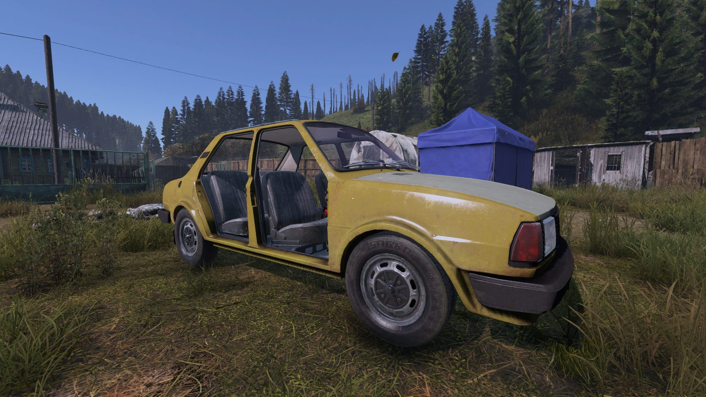
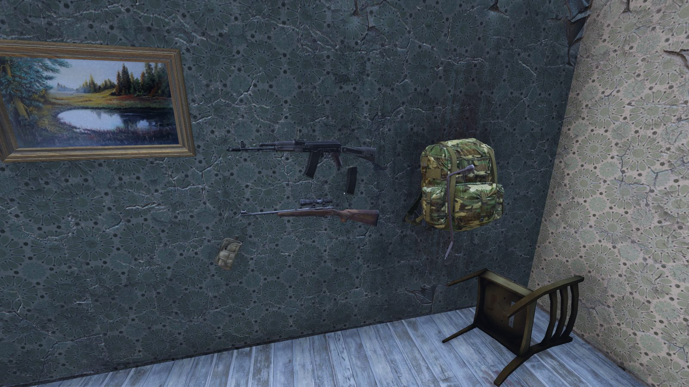
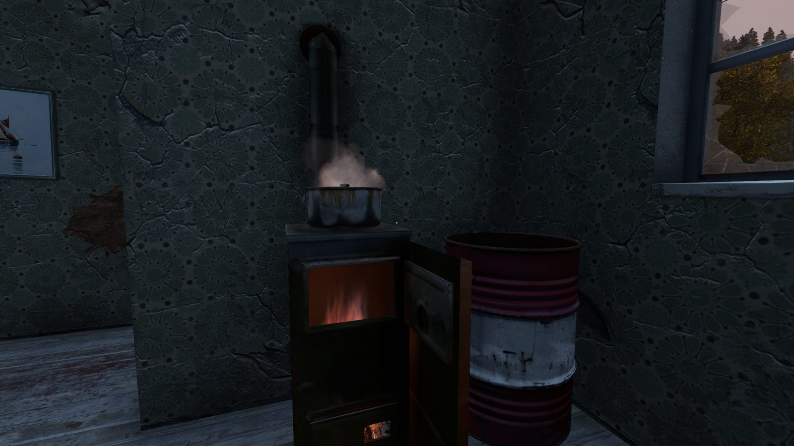

Cały system rozgrywki na naszym serwerze piszemy sami, od podstaw. Wybierz mod z listy, żeby zobaczyć jak działa — lista będzie rosła wraz z kolejnymi, które tworzymy.

Osada to nasz autorski, kompletny tryb rozgrywki. Serwer dzieli się na dwie rywalizujące frakcje — Alfę i Betę. Każda z nich rozbudowuje własną osadę, zdobywa punkty w eventach i wydaje je w punktowych stacjach NPC.
Gdy osada osiągnie odpowiedni poziom rozbudowy, jej frakcja odblokowuje możliwość ataku na wroga. Przejęcie celu kończy Sezon i ogłasza zwycięzcę — wygrywa ta społeczność, która zbudowała się silniej.
Tajemniczy handlarz, który nie stoi w jednym miejscu — pojawia się w rotujących, nieoznaczonych lokalizacjach na mapie i po pewnym czasie znika, by pojawić się gdzie indziej. Nigdy nie wiadomo z góry, gdzie go dziś znajdziesz.
Skupuje rzadkie i nielegalne przedmioty za żetony kasyna w kilku nominałach, z limitem sprzedaży na gracza chroniącym ekonomię serwera przed nadużyciami. Menu handlu działa w kilku językach, w tym po polsku i angielsku.

Przepisaliśmy prowadzenie i mechanikę pojazdów od podstaw — osobno dla każdego z 5 modeli. Stan techniczny auta ma teraz realny wpływ na to, jak ono jeździ i zachowuje się w trasie, a nie tylko na to, co widzisz w jego pasku zdrowia.
Zajeżdżony silnik traci moc, zużyta świeca zapłonowa potrafi zostawić cię na środku drogi, a niedokręcone koło odpadnie, jeśli za bardzo się rozpędzisz. Terenówki w terenie faktycznie ciągną wszystkimi kołami, a nie grzebią jednym zawieszonym w powietrzu. Na szczęście prawie wszystko da się teraz naprawić — nawet do stanu fabrycznie nowego.
CZapięte pasy mocno ograniczają obrażenia z wypadku — mogą być różnicą między lekkim szokiem a śmiercią przy tym samym uderzeniu. Pamiętaj tylko, że przy zapiętych pasach nie wysiądziesz z auta, nawet awaryjnie w locie — najpierw odepnij je tym samym klawiszem.
Zajeżdżona świeca zapłonowa potrafi losowo zgasić silnik podczas jazdy — im gorsza świeca, tym częściej. Jeśli w tym momencie jedziesz na biegu, auto samo spróbuje złapać zapłon zaraz po zgaśnięciu. Jeśli stoisz albo jedziesz na luzie — wrzuć bieg do przodu, to Twoja szansa na odpalenie na pych. Możesz próbować wielokrotnie, wrzucając luz i bieg na przemian, ile chcesz.
Odpalenie na pych działa mechanicznie, nie elektrycznie — kompletnie ignoruje stan baterii. Znalazłeś auto z rozładowanym akumulatorem? Zepchnij je (albo znajdź stok), nabierz prędkości powyżej ok. 10 km/h i wrzuć bieg — silnik złapie bez ładowania baterii. Uwaga: bateria wciąż musi tam fizycznie być i nie być doszczętnie spalona — to nie zastąpi jej całkowitego braku.
Kluczem do kół możesz odkręcić lub dokręcić nakrętki. Koło zostawione niedokręcone samo odpadnie, gdy rozpędzisz auto powyżej ok. 20 km/h — ląduje jako normalny, zbieralny przedmiot obok auta, ale zostajesz z autem na trzech kołach. Sprawdź stan kół przed dłuższą podróżą, zwłaszcza po tym jak ktoś inny majstrował przy Twoim aucie.
Podejdź do uszkodzonej części z odpowiednim narzędziem w rękach i użyj opcji naprawy: chłodnica — kit epoksydowy (Epoxy Putty), świeca zapłonowa/żarowa — elektryczny zestaw naprawczy (Electronic Repair Kit), silnik — palnik (Blowtorch, wymaga naładowanej butli gazowej). Każde użycie leczy jeden poziom uszkodzenia, więc mocno zniszczoną część naprawisz kilkoma użyciami aż do stanu jak fabrycznie nowa — bez szukania zamiennika w całym Czarnorusiu. Uwaga: to działa tylko, dopóki część nie jest doszczętnie zniszczona (Ruined) — chłodnicę, świecę i silnik w stanie Ruined trzeba wymienić, żaden zestaw naprawczy ani palnik już ich nie uratuje.
Pracujący silnik ogrzewa kabinę, ale tylko gdy wszystkie drzwi (i bagażnik w niektórych autach) są założone i zamknięte — samo zamknięcie nie wystarczy, jeśli którychś drzwi w ogóle brakuje na aucie. Wieziesz zmarzniętego towarzysza po ucieczce z wody? Upewnij się, że każde drzwi są na miejscu, zamknij je i włącz silnik — z choćby jednymi zdjętymi albo otwartymi ciepło ucieka na zewnątrz i bonusu nie poczujecie.
W ADZIE (OffroadHatchback) dyferencjał centralny i tylny są zablokowane, a przedni zostaje otwarty — dokładnie jak w prawdziwej terenówce z blokowanym tylnym mostem. Jedno koło zawieszone w powietrzu na kamieniu czy pieńku już nie zabiera całej mocy silnika, a otwarty przód wciąż pozwala płynnie skręcać na asfalcie zamiast szarpać kierownicą.
Auta spalają teraz zauważalnie więcej paliwa niż w oryginalnej grze — jazda przez pół mapy na jednym baku to już nie pewniak. Zabierz kanister zapasowy, zwłaszcza jeśli jedziesz ciężarówką albo terenówką na duże obroty.
Serwer może mieć włączony administracyjny limit prędkości, żeby jazda po drogach była przyjemniejsza i bezpieczniejsza dla wszystkich. Przytrzymanie Shift (turbo) czasowo go omija, dając Ci pełną moc wtedy, kiedy naprawdę jej potrzebujesz — np. uciekając przed pościgiem.
Krótko mówiąc: prowadzenie stało się trudniejsze, bardziej wymagające i dużo bardziej emocjonujące — dokładnie tak, jak powinno być na serwerze przetrwania.

Koniec z bezmyślnym rzucaniem przedmiotów pod nogi. Trzymając cokolwiek w rękach, wybierz z menu akcji „Umieść” — zamiast upuszczenia, przedmiot stawiasz dokładnie tam, gdzie celujesz, w zasięgu do 2 metrów. Na półce, na ścianie, na stole — gdziekolwiek zechcesz.
Działa dla dosłownie każdego przedmiotu w grze, łącznie z tymi, których w podstawowej wersji gry nie da się postawić — garnkiem z zupą czy manierką z wodą w środku. Twoja baza w końcu może wyglądać jak baza, nie magazyn rzeczy porozrzucanych po podłodze: broń powieszona na ścianie, zapasy poukładane na półkach, zdobyczny hełm czy plecak zawieszony jak trofeum.

Przepisaliśmy gotowanie w garnku od podstaw. Zamiast pojedynczego składnika i jednej sztywnej recepty, wrzucasz do garnka kilka rzeczy naraz, a to co ugotujesz zależy od tego, co faktycznie w nim jest. Działa identycznie na ognisku i na przenośnej kuchence gazowej.
System ma dwa etapy. Najpierw białko — ryba, kurczak albo czerwone mięso — ugotowane w czystej wodzie zamienia ją w wywar: rybny, rosół z kurczaka albo mięsny, zależnie co wrzucisz jako pierwsze. Wywar, gdy już powstanie, nie zmienia się na inny, nawet jeśli dorzucisz inne białko. Gdy wywar jest gotowy, dorzucenie warzyw albo grzybów zamienia go w finalną zupę — warzywną albo grzybową. Bez białka jako bazy zupa nie powstanie w ogóle — samych warzyw czy grzybów w wodzie nie ugotujesz.
Pracujemy nad kolejnymi modami. Podglądy i opisy pojawią się tutaj, gdy tylko będą gotowe — śledź Discorda, żeby być na bieżąco.